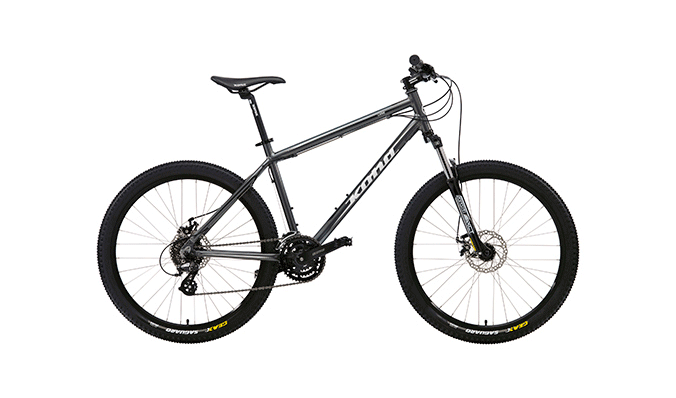

Горные велосипеды супер универсальны. Их можно использовать для перевозки продуктов с рынка, велопрогулок в парке или кругосветного путешествия. Но основное предназначение горного велосипеда — это помощь велосипедисту в преодолении грязных троп, необязательно горных.
Прежде чем начать выбирать горный велосипед в специализированном велосипедном магазине, уясните для себя следующие вопросы:Если есть возможность, то протестируйте несколько отобранных моделей горных велосипедов. Весьма вероятно, что одна из них подойдёт вам лучше, чем остальные.